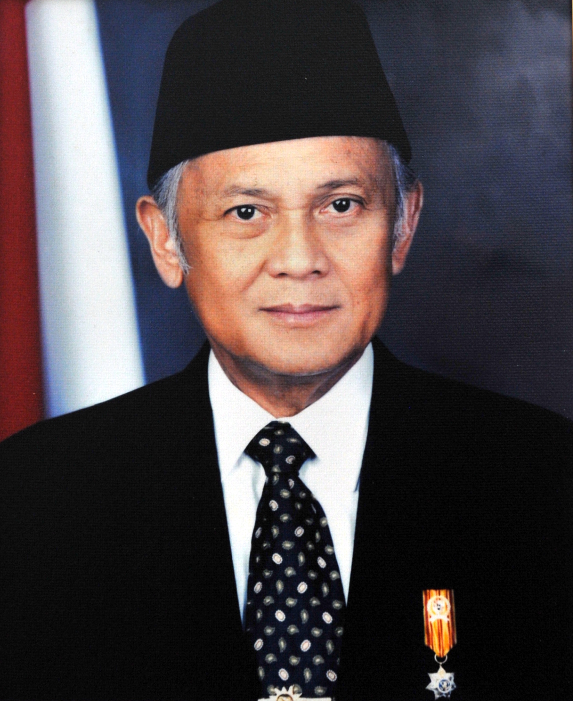
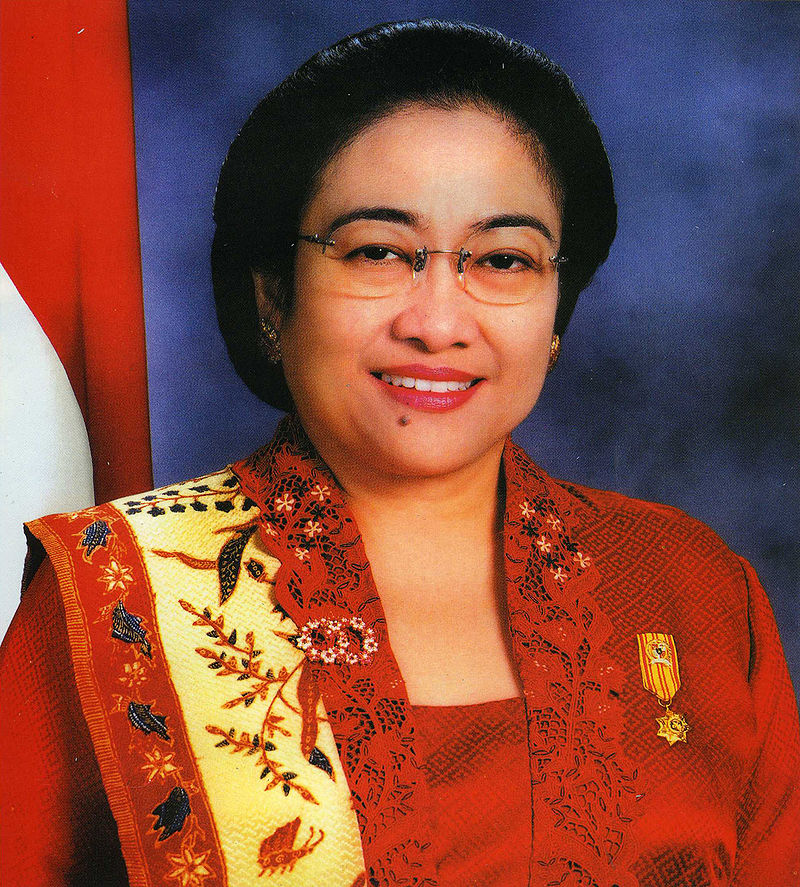
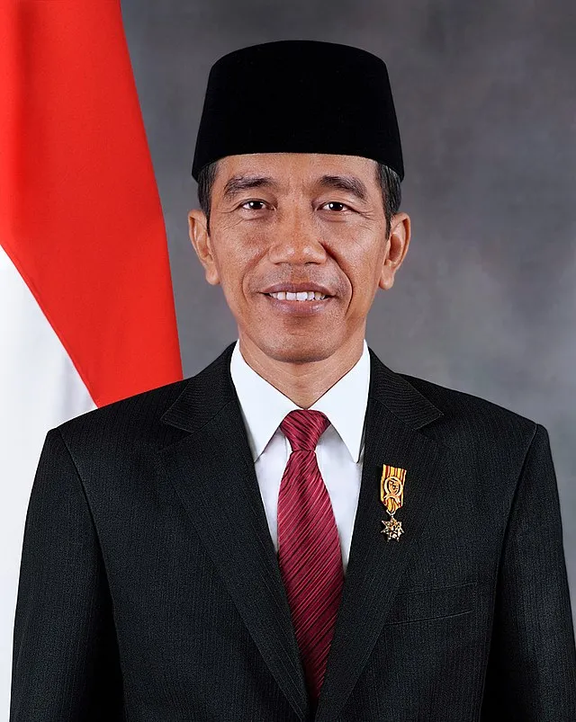

information about Indonesian history and President of Indonesia
A Brief History of Indonesia Until the Age of Seizing Independence
Jakarta - Indonesian History needs to be known. The name Indonesia itself was used for the first time at the Second Youth Congress on October 28, 1928. Long before that the area now called Indonesia was better known as Nusantara. Various kingdoms are in this archipelago.
The Archipelago has almost never escaped colonization by foreign nations. Abundant natural resources are a target. The Portuguese in 1509 succeeded in controlling the areas of Malacca, Ternate and Madura. One of the resistances was from Fatahillah from Demak who succeeded in seizing Sunda Kelapa from the Portuguese in 1602.
After the Portuguese, the Dutch then moved to the Banten area under the leadership of Cornelis de Houtman. At that time, the Dutch wanted to form a VOC and control Indonesian spices.In forming the VOC there were several agreements that the Dutch had to obey, such as the Bongaya agreement to the Giyanti agreement. After the VOC was dissolved, the Dutch finally appointed Herman William Daendels as governor general of the Dutch East Indies. During his time, he forced the people of Java to work to build the Anyer-Panarukan route.
The Dutch controlled Indonesia for approximately 350 years. Until finally Japan entered Indonesia and attacked the Netherlands until it surrendered unconditionally. Japanese rule ended after 3.5 years of colonization and ended when the allied forces lost in World War II. In addition, two cities in Japan, Hiroshima and Nagasaki, were bombed by the allied forces.
Knowing that Japan had lost, a BPUPKI or Dokuritsu Junbi Cosakai body was formed which was chaired by Dr. Radjiman Widyodiningrat.
After hearing about Japan's defeat on August 14, 1945, the younger group urged the older group to quickly carry out the proclamation of independence.
In the history of Indonesia's independence process, the Rengasdengklok incident occurred, namely the kidnapping of Soekarno and Hatta by young people to accelerate the implementation of the proclamation.
After returning to Jakarta, Soekarno and Hatta began compiling the text of the proclamation at Admiral Maeda's house and was assisted by Achmad Soebardjo and witnessed by Soekarno, BM, Diah, Sudiro and Sayuti Melik.
The text of the proclamation was finally read on August 17, 1945. The history of Indonesia after independence was to ratify and establish the Constitution (UUD) as the foundation of the Republic of Indonesia which was finally known to the public as the 1945 Constitution.
Soekarno
The first president of the Republic of Indonesia, Soekarno, who was usually called Bung Karno, was born in Surabaya, East Java, on June 6, 1901 and died in Jakarta on June 21, 1970.
During his lifetime he had three wives and was blessed with eight children. He formulated the teachings of Marhaenism and founded the Indonesian National Party (PNI) with the goal of an independent Indonesia. As a result, the Dutch put him in Sukamiskin prison.
Eight months later a new trial. In his defense, titled Indonesia Against the Law, Soekarno pointed out the apostasy of the Netherlands, a nation which at that time was more advanced than Indonesia.
After going through a long struggle, Bung Karno and Bung Hatta proclaimed the independence of the Republic of Indonesia on August 17, 1945. In the PPKI meeting, August 18, 1945 Ir. Sukarno was elected by acclamation as the first President of the Republic of Indonesia.
Soekarno's presidency period started from 1945 to 1966.
Soeharto
Suharto was the second president of the Republic of Indonesia who was born in Kemusuk, Yogyakarta on June 8 1921 and died on January 27, 2006.
He became a member of the TNI in 1945 and married Siti Hartinah, a daughter of a Mangkunegara employee and was blessed with six sons and daughters.
As a major general, Suharto made his way into the military which brought him into the political arena.
Due to the deteriorating political situation after the outbreak of the G-30-S/PKI, at the March 1967 meeting, Suharto was officially appointed as the second President of Indonesia to replace Soekarno.
Pak Harto ruled for more than three decades, passing six elections until he resigned on May 21, 1998.
Bacharuddin Jusuf Habibie

The third president of the Republic of Indonesia named Bacharuddin Jusuf Habibie or BJ Habibie was born in Pare-Pare, South Sulawesi, on June 25, 1936.
He married Hasri Ainun Habibie in 1962 and was blessed with two sons.
As a genius, Habibie's steps are often admired and full of controversy, because many disagree with him.
He is a winner of the prestigious Thedore van Karman Award. He also earned a Doctorate in Aircraft Construction in Germany with the Summa Cum Laude predicate.
Habibie served as Minister of State for Research and Technology/Head of BPPT for 20 years, leading 10 BUMN companies in Strategic Industries.
Replacing Suharto, Habibie who was Vice President Suharto was finally chosen by the MPR to become President of Indonesia by the Chief Justice of the Supreme Court based on article 8 of the 1945 Constitution.
However, not long after in 1999, Habibie was forced to step down as a result of the East Timor referendum which voted for independence from Indonesia.
Abdurrahman Wahid
The 4th President of the Republic of Indonesia is Abdurrahman Wahid or fondly called Gus Dur, he was born on August 4, 1940 in Denanyar Village, Jombang, East Java and died on December 30, 2009.
In 1984 Gus Dur was elected by acclamation by a team of ahl wa al-aqdi chaired by K.H. As'ad Syamsul Arifin to occupy the position of general chairman of the 27th PBNU congress in Situbondo.
Gus Dur was elected President of Indonesia to replace Habibie in 1999, then his term ended in 2001.
Megawati Soekarnoputri

Born in Yogyakarta, January 23, 1947, Megawati Soekarnoputri was the 8th Vice President of Indonesia who accompanied Gus Dur.
Megawati is the eldest daughter of the first Indonesian President Soekarno and Fatmawati. Megawati was married twice, first to Air Force Lieutenant First Lieutenant pilot Surendo and then married Taufik Kiemas.
Megawati entered politics by establishing the Indonesian Democratic Party of Struggle and won the elections in 1999. But it turned out that at the 1999 SU-MPR, Mega lost as President.
However, it took no less than two years for MPR members to unanimously place Megawati as the 5th President of the Republic of Indonesia to replace Gus Dur.
Megawati's term of office began in 2001 and ended in 2004.
Susilo Bambang Yudhoyono
Unlike the previous presidential elections, he was the 6th President who was directly elected by the people in the second round of the Presidential Election process on 20 September 2004.
He has had a great career in the military and his political career began on January 27, 2000, when he decided to retire early from the military when he was appointed Minister of Mines and Energy.
SBY passed the direct presidential election in 2004 and served as President of Indonesia for two terms from 2004-2014.
Joko Widodo

Joko Widodo was born in 1961 in Solo. He started his career as Mayor of Solo and succeeded in developing his name to the national scene thanks to the invention of the ESEMKA car which was used for his official car.
Then in 2012, Joko Widodo was promoted by PDIP to become Governor of Jakarta with Basuki Thahaja. The term of office of the 7th President of the Republic of Indonesia, Joko Widodo, began in 2014 and will end in 2024.